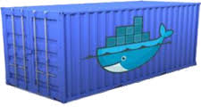
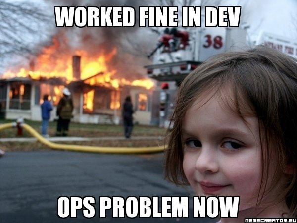
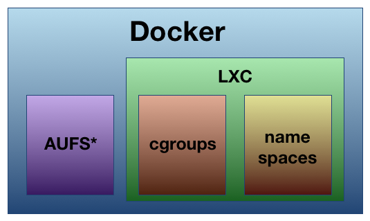
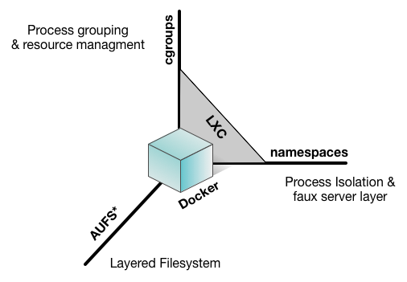
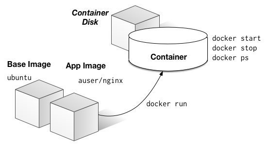
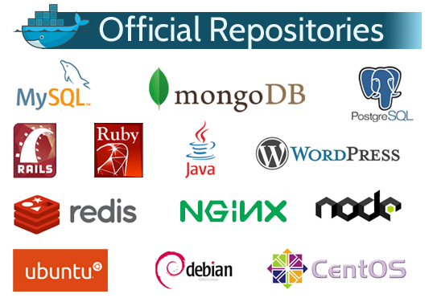

00:00:00
Docker
APSL
bcabezas@apsl.net
Notes
Docker · Nov 2014 · apsl.net


Agenda
- Qué es?
- El problema
- la revolución de los containers
- Ventajas principales
- Arquitectura
- El ciclo de vida Docker
- El ecosistema
Notes
Docker · Nov 2014 · apsl.net
¿Qué es Docker?

"Docker es un proyecto de software libre para crear fácilmente containers ligeros, portables y auto-suficientes de cualquier aplicación"
Notes
Docker · Nov 2014 · apsl.net
El problema
Desplegar aplicaciones en los servidores es demasiado complicado
Notes
Docker · Nov 2014 · apsl.net
El problema
Desplegar aplicaciones en los servidores es demasiado complicado

Notes
Docker · Nov 2014 · apsl.net
The Matrix From Hell

Notes
Docker · Nov 2014 · apsl.net
Transportes de mercancías antes de 1960

Notes
Docker · Nov 2014 · apsl.net
También otra Matrix From Hell

Notes
Docker · Nov 2014 · apsl.net
Solución: El transporte intermodal

Notes
Docker · Nov 2014 · apsl.net
Docker es un sistema de contenedores para software
 aplicaciones
aplicaciones
Notes
Docker · Nov 2014 · apsl.net
Docker elimina la Matriz

Notes
Docker · Nov 2014 · apsl.net
Containers: Caracteríasticas disruptivas
- Encapsulación: Aplicaciones y todas sus dependencias encapsuladas con una * interfaz estándar. Puerto TCP, start, stop, logs, límites... Densidad:
- Ligereza significa Maximizacioń de recursos Hardware Más aplicaciones en el
- mismo Rack Hardware Inició rápido. Una VM sin el sobrecoste de una VM.
- Reinicio al estado inicial instantáneo. Repetitividad y consistencia.
- Builds repetibles y automáticos. Construye una vez. Despliega en local,
- test, QA, pre, prod, cloud, PaaS... Lleva el trabajo colaborativo también a
- la parte Ops. http://hub.docker.io Gestión de contenedores como código
- (commit / push / pull / diff) Aislamiento y seguridad
Notes
Docker · Nov 2014 · apsl.net
Extremadamente ligeros: Densidad e Inicio rápido

Notes
Docker · Nov 2014 · apsl.net
Repetitividad y portabilidad
- Evita el problema de "En mi máquina funciona"

Notes
Docker · Nov 2014 · apsl.net
Arquitectura Docker

Necesitamos: kernel >= 3.8
Notes
Docker · Nov 2014 · apsl.net
Arquitectura Docker

Notes
Docker · Nov 2014 · apsl.net
Aplicaciones Dockerizadas: Ciclo de vida

Notes
Docker · Nov 2014 · apsl.net
Aplicaciones Dockerizadas: Ciclo de vida

Notes
Docker · Nov 2014 · apsl.net
Cómo empezar?
curl http://get.docker.io | sudo sh
# básicamente configura repos y apt-get install lxc-docker
o
$ sudo sh -c "echo deb https://get.docker.com/ubuntu docker main\
> /etc/apt/sources.list.d/docker.list"
$ sudo apt-get update
$ sudo apt-get install lxc-docker
o
# Instala vagrant, y...
$ git clone https://github.com/dotcloud/docker.git
$ vagrant up
$ vagrant ssh
$ sudo docker
Notes
Docker · Nov 2014 · apsl.net
¿Cómo seguir?
- Docker interactive tutorial
- https://www.docker.com/tryit/
- Crear una cuenta en docker hub:
- https://hub.docker.com/
- Curiosear las imágenes APSL :)
- https://registry.hub.docker.com/repos/apsl/
Notes
Docker · Nov 2014 · apsl.net
Docker CLI Básico
$ sudo docker
- ps: Lista contenedores
- images: Lista imágenes
- run: Crea un container de una imagen
- start/stop: Para un container
- build: Crea una imagen de una Dockerfile
- inspect: Inspecciona una imagen
- logs: Ver logs (stdout/stderr) de un container
- push/pull push / pull imágenes del repositorio
Notes
Docker · Nov 2014 · apsl.net
Docker pull
bercab@valle:~$ docker pull ubuntu
ubuntu:latest: The image you are pulling has been verified
5bc37dc2dfba: Downloading [====================================> ] 146.5 MB/201.6 MB 31s
5bc37dc2dfba: Downloading [====================================> ] 147.1 MB/201.6 MB 31s
5bc37dc2dfba: Downloading [====================================> ] 147.6 MB/201.6 MB 30s
5bc37dc2dfba: Downloading [====================================> ] 148.1 MB/201.6 MB 30s
5bc37dc2dfba: Downloading [=======================================> ] 160 MB/201.6 MB 23s
5bc37dc2dfba: Pull complete
61cb619d86bc: Pull complete
3f45ca85fedc: Pull complete
78e82ee876a2: Pull complete
dc07507cef42: Pull complete
86ce37374f40: Pull complete
Status: Downloaded newer image for ubuntu:latest
bercab@valle:~$ docker run -it ubuntu bash
root@388ebdac8559:/#
Notes
Docker · Nov 2014 · apsl.net
Docker run, commit, push
root@388ebdac8559:/# apt-get update
# se bajan muchas cosas
root@388ebdac8559:/# apt-get install redis-server
# apt-get hace muchas cosas
root@388ebdac8559:/# exit
bercab@valle:~$ docker ps -a
CONTAINER ID IMAGE COMMAND CREATED STATUS PORTS NAMES
388ebdac8559 ubuntu:latest "bash" 4 minutes ago Exited (0) 24 seconds ago tender_sammet2
bercab@valle:~$ docker diff 388ebdac8559
A /etc/bash_completion.d/redis-cli
C /etc/default
A /usr/bin/redis-cli
# todos los cambios en el fs del container aparecen en el diff
bercab@valle:~$ docker commit -m "Instalamos redis-server" 388ebdac8559 bercab/redis
39723f9604b2d26810a7b9527af4d737f38ed269cefc9b99f3ace21d49bb15dc
bercab@valle:~$ docker images
REPOSITORY TAG IMAGE ID CREATED VIRTUAL SIZE
bercab/redis latest 39723f9604b2 6 seconds ago 215.4 MB
bercab@valle:~$ docker push bercab/redis
# ...
Notes
Docker · Nov 2014 · apsl.net
Docker run, commit, push
bercab@valle:~$ docker run --name miredis -d bercab/redis /usr/bin/redis-server
3766d86c1363875da76399bde74d4ff8038fc1861d624d49999ae22315907880
bercab@valle:~$ docker ps
CONTAINER ID IMAGE COMMAND STATUS PORTS NAMES
3766d86c1363 bercab/redis "/usr/bi Up 7 seconds 0.0.0.0:6379->6379/tcp miredis
bercab@valle:~$ docker logs miredis
[1] 28 Nov 01:55:10.599 # Warning: no config file specified, using the default config. In order to specify a config file use /usr/bin/redis-server /path/to/redis.conf
_._
_.-``__ ''-._
_.-`` `. `_. ''-._ Redis 2.8.4 (00000000/0) 64 bit
.-`` .-```. ```\/ _.,_ ''-._
( ' , .-` | `, ) Running in stand alone mode
|`-._`-...-` __...-.``-._|'` _.-'| Port: 6379
| `-._ `._ / _.-' | PID: 1
[1] 28 Nov 01:55:10.603 # Server started, Redis version 2.8.4
[1] 28 Nov 01:55:10.603 # WARNING overcommit_memory is set to 0! Background save may fail under low memory condition. To fix this issue add 'vm.overcommit_memory = 1' to /etc/sysctl.conf and then reboot or run the command 'sysctl vm.overcommit_memory=1' for this to take effect.
[1] 28 Nov 01:55:10.603 * The server is now ready to accept connections on port 6379
bercab@valle:~$ docker stop miredis
miredis
bercab@valle:~$ docker start miredis
miredis
Notes
Docker · Nov 2014 · apsl.net
Bonus: docker exec
bercab@valle:~$ docker exec -it miredis bash
root@3766d86c1363:/# ps axu
USER PID %CPU %MEM VSZ RSS TTY STAT START TIME COMMAND
root 1 0.0 0.0 37000 5536 ? Ssl 01:58 0:00 /usr/bin/redis-server *:6379
root 14 0.3 0.0 18140 1860 ? S 02:00 0:00 bash
root 28 0.0 0.0 15568 1128 ? R+ 02:00 0:00 ps axu
- Docker exec rompe la filosofía inicial de docker: No hace falta entrar en los
containers. Sin embargo, en casos puntuales se reclamaba la necesidad.
- Ejecutar sshd. (Why you don't need to run sshd in your docker containers)
- Salió nsenter, precedesor de docker exec
Notes
Docker · Nov 2014 · apsl.net
Pero... un momento
¿Esto no era automático y repetible?
Notes
Docker · Nov 2014 · apsl.net
Dockerfiles · Dockerizando Apps
bercab@valle:~/workspace/docker_talk$ cat Dockerfile
FROM ubuntu
MAINTAINER Bernardo Cabezas bcabezas@apsl.net
RUN apt-get -qq update
RUN apt-get install -y python3 && apt-get update
ADD . /talk
EXPOSE 8080
WORKDIR /talk
CMD ["python3", "-m", "http.server", "8080"]
Notes
Docker · Nov 2014 · apsl.net
Dockerfiles · build
bercab@valle:~/workspace/docker_talk$ docker build -t dockertalk .
Sending build context to Docker daemon 4.335 MB
Sending build context to Docker daemon
Step 0 : FROM ubuntu
---> 86ce37374f40
Step 1 : MAINTAINER Bernardo Cabezas bcabezas@apsl.net
---> Running in 6b5b0848c8b0
---> 544ef4474408
Removing intermediate container 6b5b0848c8b0
Step 2 : RUN apt-get -qq update
---> Running in 67a53263172e
Removing intermediate container 67a53263172e
Step 3 : RUN apt-get install -y python3 && apt-get update
---> Running in 5f648c117b96
[...]
Step 7 : CMD python3 -m http.server 8080
---> Running in 89dbb7db1302
---> 00426629c1ec
Removing intermediate container 89dbb7db1302
Successfully built 00426629c1ec
Notes
Docker · Nov 2014 · apsl.net
Dockerfiles · run
bercab@valle:~/workspace/docker_talk$ docker images
REPOSITORY TAG IMAGE ID CREATED VIRTUAL SIZE
dockertalk latest 00426629c1ec 2 minutes ago 238.2 MB
bercab@valle:~/workspace/docker_talk$ docker run -d --name talk -p 8080:8080 dockertalk
a47112189b70937c6c8d0ec6b1a006015cba5f5c076daf35eedf148a94006cc1
bercab@valle:~/workspace/docker_talk$ wget -O /dev/null -S http://localhost:8080/
--2014-11-28 03:20:09-- http://localhost:8080/
Resolviendo localhost (localhost)... 127.0.0.1
Conectando con localhost (localhost)[127.0.0.1]:8080... conectado.
Petición HTTP enviada, esperando respuesta...
HTTP/1.0 200 OK
Server: SimpleHTTP/0.6 Python/3.4.0
Date: Fri, 28 Nov 2014 02:20:09 GMT
Content-type: text/html
Content-Length: 46315
Last-Modified: Fri, 28 Nov 2014 02:10:46 GMT
Longitud: 46315 (45K) [text/html]
Grabando a: “/dev/null”
bercab@valle:~/workspace/docker_talk$ docker top talk
UID PID PPID C STIME TTY TIME CMD
root 13622 8497 0 03:17 ? 00:00:00 python3 -m http.server 8080
Notes
Docker · Nov 2014 · apsl.net
Aplicaciones Dockerizadas
-
Proceso creación Imágenes
- Manual (run, apt-get [...], commit, push)
- Automático: Dockerfiles
-
Estilo Containers:
- Un sólo proceso
- Múltiples procesos encapsulados en un container
- Gestor procesos: supervisor, circusd, runit, systemd
- Ej:
varnish | nginx | tomcat7
Notes
Docker · Nov 2014 · apsl.net
Docker Oficial Repos

Notes
Docker · Nov 2014 · apsl.net
Ecosistema Docker
- Orquestación (todo Software Libre)
- fig
- flocker
- Google Kubernetes
- Mesos http://mesos.apache.org/
- openstack Heat
- http://panamax.io/
- shipyard
- dokku (Docker mini-herokku)
- deis
- flynn http://flynn.io/
- Chef (OpsWorks), Puppet, SaltStack
- RedHat OpenShift V3
Notes
Docker · Nov 2014 · apsl.net
Ecosistema Docker
- Container Hosting providers:
- tutum https://www.tutum.co/
- new! Amazon EC2 Container Service (ECS)
- new! Google Container Engine
- Amazon Elastic Beanstalk
- https://orchardup.com/
- Red Hat Projectatomic http://www.projectatomic.io/
- RedHat OpenShift V3
- DigitalOcean (eocker CoreOS)
- Otros
- CoreOS https://coreos.com/
- https://quay.io/ (private hosting)
- https://www.shippable.com/
Notes
Docker · Nov 2014 · apsl.net
En resumen
- Docker usa tecnologías existentes, pero las hace fáciles y les da un nuevo uso
- Mayor Densidad, menos sobrecarga, menos errores -> Menor coste IT
- Proyecto joven, producction ready desde la 1.0 (vamos por la 1.3.2)
- Con una evolución y perspectivas brutales
- Mucho soporte de la comunidad. Ecosistema creciente.
- Cada vez más soluciones Orquestación y Hosting.
- Cultura / Metodología DevOps
- Integra a la perfección con http://12factor.net/
- Implica esfuerzo inicial y prueebas de adaptación del equipo
- Pero es demasiado bueno como para no tenerlo en cuenta y probarlo
Notes
Docker · Nov 2014 · apsl.net
Gracias
bcabezas@apsl.net
http://talks.apsl.net/docker (or github)
- Gracias a:
- landslide (software python presentaciones Markup -> html5)
- docker.io, blog.docker.com, por sus diagramas ;)
Notes
Docker · Nov 2014 · apsl.net